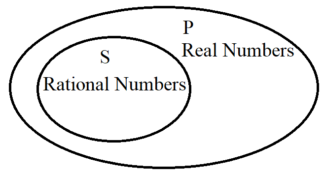
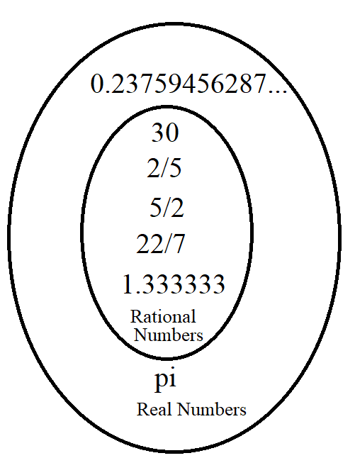
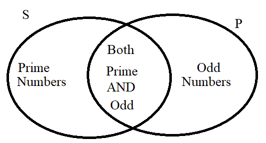
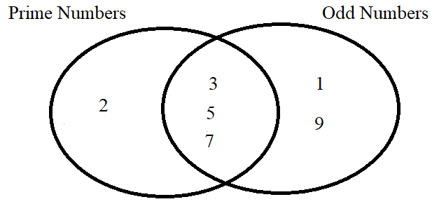
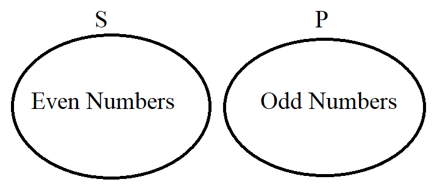
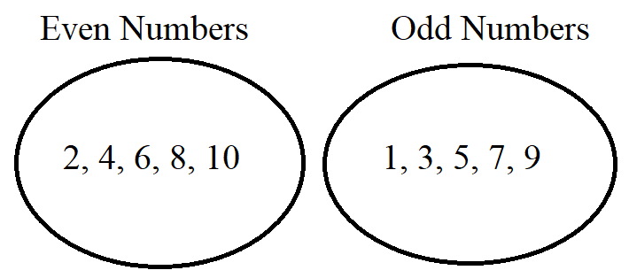
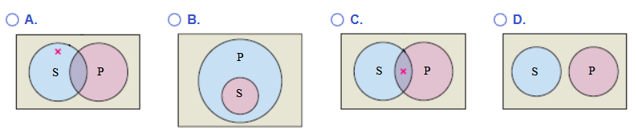
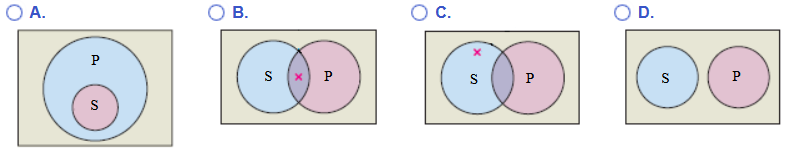
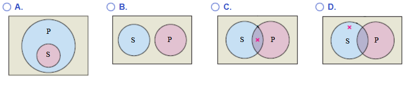
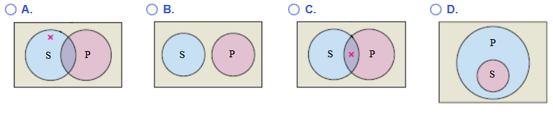

")
I greet you this day,
First: read the notes/eText.
Second: view the videos/multimedia resources of your textbook.
Third: solve the questions/solved examples.
Fourth: check your solutions with my thoroughly-explained solutions.
Comments, ideas, areas of improvement, questions, and constructive criticisms are welcome. Thank you for visiting.
Samuel Dominic Chukwuemeka (Samdom For Peace) B.Eng., A.A.T, M.Ed., M.S
Set Theory
Objectives
Students will:
(1.) Define sets.
(2.) Discuss the terms used in sets.
(3.) Determine the union of sets.
(4.) Determine the intersection of sets.
(5.) Determine the complement of a set.
(6.) List the subsets of a set.
(7.) List the power set of a set.
(8.) Determine the difference of sets.
(9.) Determine the symmetric difference of sets.
(10.) Determine the Cartesian product of sets.
(11.) Draw Venn diagrams for two sets.
(12.) Draw Venn diagrams for three sets.
(13.) Solve applied problems involving two sets.
(14.) Solve applied problems involving three sets.
Have you ever used the word, Set? In what way(s) have you used it?
Why Study Sets?
Sets are used in:
Business applications.
Political applications: in polls and surveys among others.
Definitions
Set theory is the branch of mathematics that deals with the study of sets.
A Set is a collection of things such as items and objects among others.
It is denoted by an upper-case letter, say A.
Sets can be well-defined sets or non well-defined sets.
A Class is a set of things.
Typically, a plural noun is used to identify a set or class such as set of books, set of students, set of teachers,
and set of colleges among others.
A Well-defined set is a set arranged in order.
It does not depend on the opinion of the individual.
It is not biased.
Examples are:
the set of computer science books at the AWC library arranged by their dates of publications
the set of students in Mr. C's class arranged in alphabetical order of their last names
A Non well-defined set is a set that depends on the opinion of the individual.
It is biased.
Examples are:
the set of the three best movies that were released last year
the set of the five most handsome guys at AWC.
If you do not include me in the set, then it is a wrong set ☺☺☺
We shall only deal with Well-defined sets
We also have finite sets and infinite sets.
A Finite set is a set that has a finite number of elements.
It has a bound.
It may have no elements or a positive integer number of elements.
An Infinite set is a set that is not finite.
We shall only deal with Finite sets
Description of Sets
A set can be written or described in three ways. They are:
(1.) Description: This method describes the sets in words.
(2.) Roster Form: This method uses a roster (similar to a classroom roster) to describe sets.
The roster form uses braces.
The elements of the set are listed in a roster format, separated with commas.
If the roster is too long, ellipsis (three dots) are used to indicate continuation.
Every member of the set is listed within the braces, with each member separated from the next by a comma.
If there are too many members to list, use three dots (ellipsis) ,..., to indicate a continuing pattern.
(3.) Set Notation: This method uses a shortened form to describe sets.
It is also known as Set Builder Notation or Set Generator Notation.
The set notation also uses braces.
Exercise 1
Assume Set A contains the elements: Sunday, Monday, Tuesday, Wednesday,
Thursday, Friday, and Saturday.
Describe set A using the three methods of describing sets.
Description: Set $A$ is the days of the week.
Roster Form: $A$ = {Sunday, Monday, Tuesday, ..., Friday, Saturday}
Set Notation: $A$ = {$x | x\:\: is\:\: a\:\: day\:\: of\:\: the\:\: week$}
Symbols, Terms, and Definitions
| Symbols | Terms | Definitions |
|---|---|---|
| (1.) $\{$ | Set of | $A$ = {... is read as: $A$ is a set of ... |
| (2.) $x |$ or $x:$ | $x$ such that... | $x | ...$ is read as: $x$ such that ... |
| (3.) $...$ | Ellipsis | This means continuation. It has to be only three dots. |
| (4.) $\infty$ | Infinity | Without bounds. |
|
(5.) $\mu$ or $\xi$ (mu or xi) |
Universal Set |
It is the set that contains all the elements in a particular context. It contains all the elements under consideration. Every set is a subset of the universal set. |
| (6.) $\phi$ or $\{\}$ (phi or empty set) | Empty Set or Null Set |
It is a set that has no elements. The cardinality of an empty set is zero. Student: What is the cardinality of a set? Teacher: It is the number of elements in the set. It is also known as the cardinal number of a set. There are no elements in an empty set. Hence, the cardinality of a null set is $0$ NOTE: The null set is not $0$ It is the cardinality of the null set that is $0$ |
| (7.) $\in$ | element of or member of |
Say $A$ is a set of the vowels of the English language alphabets. $A$ = $\{a, e, i, o, u\}$ $a\:\:\: \in\:\:\: A$ is read as $a$ is an element of Set $A$ $e\:\:\: \in\:\:\: A$ $i\:\:\: \in\:\:\: A$ $o\:\:\: \in\:\:\: A$ $u\:\:\: \in\:\:\: A$ |
| (8.) $n$ | Cardinality or Cardinal Number |
This is the number of elements of a set. $n(A)$ is read as: the cardinality of Set $A$ It is the number of elements in Set $A$ |
| (9.) $=$ | Equals or Equal to |
$A = B$ is read as: Set $A$ is equal to Set $B$ Two sets are equal if they have the same elements, regardless of the order of arrangement of the elements. |
| (10.) $\equiv$ | Equivalent |
$A \equiv B$ is read as: Set $A$ is equivalent to Set $B$ Two sets are equivalent if they have the same cardinality. This means that they have the same number of elements. |
| (11.) $A'$ or $A^c$ | Prime or Complement |
$A'$ or $A^c$ is read as: $A$-prime or $A$-complement The complement of Set $A$ is the set that contains all the elements in the Universal set but are not in Set $A$. You can see it as "Not $A$" They do not like Set $A$ at all. |
| (12.) $\cup$ | Union |
$A \cup B$ is read as: $A\:\: union\:\: B$ Look at it as "marriage". The man brings what he has. Write it. The woman brings what she has. Write it. If they have anything in common, write it one time. It is the set that contains: all the elements of set $A$, OR all the elements of set $B$, OR all the elements of both sets $A$ AND $B$ |
| (13.) $\cap$ | Intersect |
$A \cap B$ is read as: $A\:\: intersect\:\: B$ Look at it as "intersection", "meet", "common". It is the set that contains the elements in both sets $A$ AND $B$ |
| (14.) $\subset$ | Proper Subset |
$A \subset B$ is read as: Set $A$ is a proper subset of Set $B$ Look at it as "less than" $$ 1 \lt 3 \\[2ex] 2 \lt 3 $$ A set, say $A$ is a proper subset of another set, say $B$ if: all the elements of Set $A$ are also in Set $B$ AND Set $B$ contains at least one element that is not in Set $A$ |
| (15.) $\supset$ | Superset |
$B \supset A$ is read as: Set $B$ is a superset of Set $A$ Look at it as "greater than" $$ 3 \gt 1 \\[2ex] 3 \lt 2 $$ A set, say $B$ is a superset of another set, say $A$ if: all the elements of Set $A$ are also in Set $B$ AND Set $B$ contains at least one element that is not in Set $A$ In other words; If Set A is a proper subset of Set $B$, then Set $B$ is a superset of Set $A$ If $A \subset B$, then $B \supset A$ |
| (16.) $\subseteq$ | Subset |
$A \subseteq B$ is read as: Set $A$ is a subset of Set $B$ Look at it as "less than or equal to" $$ 1 \le 3 \\[2ex] 2 \le 3 \\[2ex] 3 \le 3 $$ A set, say $A$ is a subset of another set, say $B$ if: all the elements of Set $A$ are also in Set $B$ AND Set $B$ contains at least one element that is not in Set $A$ OR all the elements of Set $B$ are also in Set $A$ Compare: Difference between less than and less than or equal to Difference between proper subset and subset Subsets includes proper subsets and equal sets |
| (17.) $P$ | Power Set |
$P(A)$ is read as: Power Set of Set $A$ The power set of a set is the set of all the subsets of the set. The Power Set of Set $A$, $P(A)$ is the set of all the subsets of Set $A$. $ If:\;\; n(A) = k \\[3ex] n(P(A)) = 2^k \\[3ex] $ If the cardinality of a set is a number, say k, then the cardinality of the power set of that set is $2^k$ |
| (18.) $A - B$ | Difference of Sets |
$A - B$ is read as: Set $A$ difference Set $B$ Set $A$ difference Set $B$ is the set of elements in Set $A$, but not in Set $B$ |
| (19.) $A \dot{-} B$ | Symmetric Difference |
$A \dot{-} B$ is read as: Set $A$ symmetric difference Set $B$ Set $A$ symmetric difference Set $B$ is the set of elements in Set $A$ or Set $B$, but not in both Sets $A$ and $B$ |
| (20.) $A \times B$ | Cartesian Product |
$A \times B$ is read as: Set $A$ cross Set $B$ Set $A$ cross Set $B$ is the set of all possible ordered pairs of the form, $(a, b)$ where $a \in A$ and $b \in B$ |
|
(21.) $ A \cap B = \phi \\[3ex] n(A \cap B) = 0 $ |
Disjoint Sets |
Disjoint Sets are sets that do not have any common element. Two sets: say A and B are disjoint if they have no common element. The intersection of those sets is an empty set. The cardinality of the intersection is zero. |
|
(22.) $ A \cap B \ne \phi \\[3ex] n(A \cap B) \ne 0 $ |
Overlapping Sets |
Overlapping Sets are sets that have at least one common element. Two sets: say A and B overlap if they have at least one common element. |
Set Algebra
Power Set
The power set of a set, say $A$ is the set of all the subsets of set $A$.
It is denoted by $P(A)$
Given: Set $A$ with cardinality, $n$
$
n(P(A)) = 2^n \\[3ex]
n(Subsets) = 2^n \\[3ex]
n(Proper\:\: Subsets) = 2^n - 1
$
Exercise 2
For the Set $A = \{L, O, V, E\}$; determine:
(1.) The cardinality of set $A$
(2.) The set of the proper subsets.
(3.) The Power set (set of the subsets).
(4.) The cardinality of the proper subsets.
(5.) The cardinality of the power set.
(1.) $n(A) = 4$
(2.) The set of the proper subsets is:
{$\phi$, {L}, {O}, {V}, {E}, {L, O}, {L, V}, {L, E}, {O, V}, {O, E}, {V, E}, {L, O, V}, {L, O, E}, {L, V, E}, {O, V, E}}
(3.) The power set is, $P(A)$ is:
{$\phi$, {L}, {O}, {V}, {E}, {L, O}, {L, V}, {L, E}, {O, V}, {O, E}, {V, E}, {L, O, V}, {L, O, E}, {L, V, E}, {O, V, E}, {L, O, V, E}}
(4.) $n(Proper\:\: Subsets) = 15$
(5.) $n(P(A)) = 16$
Interpretations
Interpretations for Two Sets
Exercise 7
Assume:
Set $A$ represents Anatomy class at AWC (Arizona Western College)
Set $B$ represents Biology class at AWC (Arizona Western College)
$n(A)$ represents the number of AWC (Arizona Western College) students enrolled in Anatomy class
$n(B)$ represents the number of AWC (Arizona Western College) students enrolled in Biology class
Interpret the following sets.
(1.) $n(A \cup B)$
(2.) $n(A \cap B)$
(3.) $n(A \cup B)'$
Same as to $n(A' \cap B')$
(4.) $n(A \cap B)'$
Same as to $n(A' \cup B')$
(5.) $n(A' \cap B)$
(6.) $n(A \cap B')$
(7.) $n(A')$
(8.) $n(B')$
(1.) $n(A \cup B)$ represents the number of students enrolled in Anatomy OR Biology class.
(2.) $n(A \cap B)$ represents the number of students enrolled in Anatomy AND Biology class.
(3.) $n(A \cup B)'$ represents the number of students NOT enrolled in any of the classes.
They are still students of AWC but they are NOT taking any of the two classes.
(4.) $n(A \cap B)'$ represents the number of students who are NOT enrolled in BOTH Anatomy AND Biology.
They include students who are: enrolled in ONLY Anatomy class, enrolled in ONLY Biology class, and enrolled at AWC but NOT taking any of those two classes.
(5.) $n(A' \cap B)$ represents the number of students enrolled in ONLY Biology class.
(6.) $n(A \cap B')$ represents the number of students enrolled in ONLY Anatomy class.
(7.) $n(A')$ represents the number of students enrolled in ONLY Biology class as well as those students NOT enrolled in any of the two classes.
(8.) $n(B')$ represents the number of students enrolled in ONLY Anatomy class as well as those students NOT enrolled in any of the two classes.
Interpretations for Three Sets
Exercise 8
Assume:
Set $A$ represents Anatomy class at AWC (Arizona Western College)
Set $B$ represents Biology class at AWC (Arizona Western College)
Set $C$ represents Chemistry class at AWC (Arizona Western College)
$n(A)$ represents the number of AWC (Arizona Western College) students enrolled in Anatomy class
$n(B)$ represents the number of AWC (Arizona Western College) students enrolled in Biology class
$n(C)$ represents the number of AWC (Arizona Western College) students enrolled in Chemistry class
Interpret the following sets.
(1.) $n(A \cup B \cup C)$
(2.) $n(A \cap B \cap C)$
(3.) $n(A \cap B \cap C')$
Same as to $n(A' \cup B' \cup C)'$
(4.) $n(A \cap C \cap B')$
Same as to $n(A' \cup C' \cup B)'$
(5.) $n(B \cap C \cap A')$
Same as to $n(B' \cup C' \cup A)'$
(6.) $n(A \cup B \cap C')$
Same as to $n(A' \cap B' \cup C)'$
(7.) $n(A \cup C \cap B')$
Same as to $n(A' \cap C' \cup B)'$
(8.) $n(B \cup C \cap A')$
Same as to $n(B' \cap C' \cup A)'$
(9.) $n(A \cap B' \cap C')$
Same as to $n(A' \cup B \cup C)'$
(10.) $n(A \cap C' \cap B')$
Same as to $n(A' \cup C \cup B)'$
(11.) $n(B \cap C' \cap A')$
Same as to $n(B' \cup C \cup A)'$
(12.) $n(A' \cap B' \cap C')$
Same as to $n(A \cup B \cup C)'$
(1.) $n(A \cup B \cup C)$ represents the number of students enrolled in Anatomy OR Biology OR Chemistry class.
(2.) $n(A \cap B \cap C)$ represents the number of students enrolled in Anatomy AND Biology AND Chemistry class.
(3.) $n(A \cap B \cap C')$ represents the number of students enrolled in Anatomy AND Biology class ONLY.
They are students enrolled in Anatomy AND Biology class but NOT Chemistry class.
(4.) $n(A \cap C \cap B')$ represents the number of students enrolled in Anatomy AND Chemistry class ONLY.
They are students enrolled in Anatomy AND Chemistry class but NOT Biology class.
(5.) $n(B \cap C \cap A')$ represents the number of students enrolled in Biology AND Chemistry class ONLY.
They are students enrolled in Biology AND Chemistry class but NOT Anatomy class.
(6.) $n(A \cup B \cap C')$ represents the number of students enrolled in Anatomy OR Biology class but NOT Chemistry class.
(7.) $n(A \cup C \cap B')$ represents the number of students enrolled in Anatomy OR Chemistry class but NOT Biology class.
(8.) $n(B \cup C \cap A')$ represents the number of students enrolled in Biology OR Chemistry class but NOT Anatomy class.
(9.) $n(A \cap B' \cap C')$ represents the number of students enrolled in Anatomy class ONLY.
They are students enrolled in Anatomy but NOT Biology class NOR Chemistry class.
(10.) $n(A \cap C' \cap B')$ represents the number of students enrolled in Anatomy class ONLY.
They are students enrolled in Anatomy but NOT Chemistry class NOR Biology class.
(11.) $n(B \cap C' \cap A')$ represents the number of students enrolled in Biology Chemistry class ONLY.
They are students enrolled in Biology but NOT Chemistry class NOR Anatomy class.
(12.) $n(A' \cap B' \cap C')$ represents the number of students NOT enrolled in any of the classes.
They are still students of AWC but they are NOT taking any of the three classes.
Laws of Sets
Prove some of these laws in the class.
Ask students to prove the rest.
Show the Equality of Sets based on these laws.
Assess Critical Thinking: Ask students to develop their own laws or equal sets.
Laws of Sets
(1.) Identity Law or Law of Identity
$
A \cup \phi = A \\[3ex]
A \cap \mu = A \\[5ex]
$
(2.) Domination Law
$
A \cup \mu = \mu \\[3ex]
A \cap \phi = \phi \\[5ex]
$
(3.) Idempotent Law
$
A \cup A = A \\[3ex]
A \cap A = A \\[5ex]
$
(4.) Complement Law or Law of Complementation
$
A \cup A' = \mu \\[3ex]
A \cap A' = \phi \\[3ex]
\phi' = \mu \\[3ex]
\mu' = \phi \\[5ex]
$
(5.) De Morgan's Law
$
(A \cup B)' = A' \cap B' \\[3ex]
(A \cap B)' = A' \cup B' \\[5ex]
$
(6.) Commutative Law
$
A \cup B = B \cup A \\[3ex]
A \cap B = B \cap A \\[5ex]
$
(7.) Absorption Law
$
A \cup (A \cap B) = A \\[3ex]
A \cap (A \cup B) = A \\[5ex]
$
(8.) Involution Law or Law of Double Complementation
$
A'' = A \\[5ex]
$
(9.) Associative Law
$
(A \cup B) \cup C = A \cup (B \cup C) \\[3ex]
(A \cap B) \cap C = A \cap (B \cap C) \\[5ex]
$
(10.) Distributive Law
$
A \cup (B \cap C) = (A \cup B) \cap (A \cup C) \\[3ex]
A \cap (B \cup C) = (A \cap B) \cup (A \cap C)
$
Exercise 9
Based on the Laws of Sets, write the sets equal to these sets.
Indicate the laws as applicable.
$
(1.) (A \cup B)' \\[3ex]
(2.) (A \cap B)' \\[3ex]
(3.) (A' \cup B)' \\[3ex]
(4.) (A' \cap B)' \\[3ex]
(5.) (A \cup B')' \\[3ex]
(6.) (A \cap B')' \\[3ex]
(7.) (A' \cup B')' \\[3ex]
(8.) (A' \cap B')'
$
$ (1.) (A \cup B)' = A' \cap B' ...De\: Morgan's\:\: Law \\[3ex] (2.) (A \cap B)' = A' \cup B' ...De\: Morgan's\:\: Law \\[3ex] (3.) (A' \cup B)' = A \cap B' ...Involution\:\: Law\:\:\: and\:\:\: De\: Morgan's\:\: Law \\[3ex] (4.) (A' \cap B)' = A \cup B' ...Involution\:\: Law\:\:\: and\:\:\: De\: Morgan's\:\: Law \\[3ex] (5.) (A \cup B')' = A' \cap B ...De\: Morgan's\:\: Law\:\:\: and\:\:\: Involution\:\: Law \\[3ex] (6.) (A \cap B')' = A' \cup B ...De\: Morgan's\:\: Law\:\:\: and\:\:\: Involution\:\: Law \\[3ex] (7.) (A' \cup B')' = A \cap B ...Involution\:\: Law\:\:\: and\:\:\: De\: Morgan's\:\: Law \\[3ex] (8.) (A' \cap B')' = A \cup B ...Involution\:\: Law\:\:\: and\:\:\: De\: Morgan's\:\: Law $
Venn Diagrams
A Venn Diagram is a diagrammatic representation of a set.
It was developed by the English mathematician, John Venn.
Venn Diagrams for Two Sets
Exercise 10
Draw the Venn diagrams, and shade the regions for these two sets.
Let us begin with a working copy.

$
\mu = \{1, 2, 3, 4\} \\[3ex]
A = \{1, 2\} \\[3ex]
A' = \{3, 4\} \\[3ex]
B = \{2, 3\} \\[3ex]
B' = \{1, 4\} \\[3ex]
A \cup B = \{1, 2, 3\} \\[3ex]
A \cap B = \{2\} \\[3ex]
A' \cup B' = \{1, 3, 4\} \\[3ex]
A' \cap B' = \{4\} \\[3ex]
A' \cup B = \{2, 3, 4\} \\[3ex]
A' \cap B = \{3\} \\[3ex]
A \cup B' = \{1, 2, 4\} \\[3ex]
A' \cap B' = \{1\} \\[5ex]
$
Shade the regions represented by the answers.
(1.) $A \cup B = \{1, 2, 3\}$
$(A' \cap B')' = \{1, 2, 3\}$
(2.) $A \cap B = \{2\}$
$(A' \cup B')' = \{2\}$
(3.) $A' \cap B = \{3\}$
$(A \cup B')' = \{3\}$
(4.) $A \cap B' = \{1\}$
$(A' \cup B)' = \{1\}$
(5.) $A' \cup B = \{2, 3, 4\}$
$(A \cap B')' = \{2, 3, 4\}$
(6.) $A \cup B' = \{1, 2, 4\}$
$(A' \cap B)' = \{1, 2, 4\}$
(7.) $(A \cup B)' = \{4\}$
$A' \cap B' = \{4\}$
(8.) $(A \cap B)' = \{1, 3, 4\}$
$A' \cup B' = \{1, 3, 4\}$
|
(1.) $A \cup B$ |

|
|
(2.) $A \cap B$ |

|
|
(3.) $A' \cap B$ |

|
|
(4.) $A \cap B'$ |

|
|
(5.) $A' \cup B$ |

|
|
(6.) $A \cup B'$ |

|
|
(7.) $(A \cup B)'$ |
'.png)
|
|
(8.) $(A \cap B)'$ |
'.png)
|
|
(9.) $\mu$ |

|
|
(10.) $\phi$ |
'.png)
|
|
(11.) $Disjoint\:\: Sets$ |

|
|
(12.) $B \subset A$ |

|
|
(13.) $A$ |

|
|
(14.) $B$ |

|
|
(15.) $A'$ |

|
|
(16.) $B'$ |

|
|
(17.) Shaded area outside Disjoint Sets: $A' \cap B'$ |

|
Venn Diagrams for Three Sets
Exercise 11
Draw the Venn diagrams, and shade the regions for these three sets.
Let us begin with a working copy.

$ \mu = \{1, 2, 3, 4, 5, 6, 7, 8\} \\[3ex] A = \{1, 4, 5, 7\} \\[3ex] A' = \{2, 3, 6, 8\} \\[3ex] B = \{2, 5, 6, 7\} \\[3ex] B' = \{1, 3, 4, 8\} \\[3ex] C = \{3, 4, 6, 7\} \\[3ex] C' = \{1, 2, 5, 8\} \\[3ex] A \cup B \cup C = \{1, 2, 3, 4, 5, 6, 7\} \\[3ex] A \cap B \cap C = \{7\} \\[3ex] A' \cup B' \cup C' = \{1, 2, 3, 4, 5, 6, 8\} \\[3ex] A' \cap B' \cap C' = \{8\} \\[3ex] A \cup B = \{1, 2, 4, 5, 6, 7\} \\[3ex] A \cup C = \{1, 3, 4, 5, 6, 7\} \\[3ex] B \cup C = \{2, 3, 4, 5, 6, 7\} \\[3ex] A \cap B = \{5, 7\} \\[3ex] A \cap C = \{4, 7\} \\[3ex] B \cap C = \{6, 7\} $
(1.) $A$ OR $B$ OR $C$
$
A \cup B \cup C = \{1, 2, 3, 4, 5, 6, 7\} \\[3ex]
(A' \cap B' \cap C')' = \{1, 2, 3, 4, 5, 6, 7\}
$
(2.) $A$ AND $B$ AND $C$
$
A \cap B = \{5, 7\} \\[3ex]
A \cap B \cap C = \{5, 7\} \cap \{3, 4, 6, 7\} = \{7\} \\[3ex]
A \cap B \cap C = \{7\} \\[3ex]
(A' \cup B' \cup C')' = \{7\}
$
(3.) $A \cup (B \cap C)$
$
B \cap C = \{6, 7\} \\[3ex]
A \cup (B \cap C) = \{1, 4, 5, 7\} \cup \{6, 7\} \\[3ex]
A \cup (B \cap C) = \{1, 4, 5, 6, 7\} \\[3ex]
(A \cup B) \cap (A \cup C) = \{1, 4, 5, 6, 7\}
$
(4.) $B \cup (A \cap C)$
$
A \cap C = \{4, 7\} \\[3ex]
B \cup (A \cap C) = \{2, 5, 6, 7\} \cup \{4, 7\} \\[3ex]
A \cup (B \cap C) = \{2, 4, 5, 6, 7\} \\[3ex]
(B \cup A) \cap (B \cup C) = \{2, 4, 5, 6, 7\}
$
(5.) $C \cup (A \cap B)$
$
A \cap B = \{5, 7\} \\[3ex]
C \cup (A \cap B) = \{3, 4, 6, 7\} \cup \{5, 7\} \\[3ex]
A \cup (B \cap C) = \{3, 4, 5, 6, 7\} \\[3ex]
(C \cup A) \cap (C \cup B) = \{3, 4, 5, 6, 7\}
$
(6.) $A \cup B \cap C$
$
A \cup B = \{1, 2, 4, 5, 6, 7\} \\[3ex]
A \cup B \cap C = \{1, 2, 4, 5, 6, 7\} \cap \{3, 4, 6, 7\} \\[3ex]
A \cup B \cap C = \{4, 6, 7\} \\[3ex]
(A' \cap B' \cup C')' = \{4, 6, 7\}
$
(7.) $B \cup C \cap A$
$
B \cup C = \{2, 3, 4, 5, 6, 7\} \\[3ex]
A \cup B \cap C = \{2, 3, 4, 5, 6, 7\} \cap \{1, 4, 5, 7\} \\[3ex]
A \cup B \cap C = \{4, 5, 7\} \\[3ex]
(B' \cap C' \cup A')' = \{4, 5, 7\}
$
(8.) $A \cup C \cap B$
$
A \cup C = \{1, 3, 4, 5, 6, 7\} \\[3ex]
A \cup C \cap B = \{1, 3, 4, 5, 6, 7\} \cap \{2, 5, 6, 7\} \\[3ex]
A \cup C \cap B = \{5, 6, 7\} \\[3ex]
(A' \cap C' \cup B')' = \{5, 6, 7\}
$
(9.) $A \cup B \cup C'$
$
A \cup B = \{1, 2, 4, 5, 6, 7\} \\[3ex]
A \cup B \cup C' = \{1, 2, 4, 5, 6, 7\} \cup \{1, 2, 5, 8\} \\[3ex]
A \cup B \cup C' = \{1, 2, 4, 5, 6, 7, 8\} \\[3ex]
(A' \cap B' \cap C)' = \{1, 2, 4, 5, 6, 7, 8\}
$
(10.) $A \cup B' \cup C$
$
A \cup B' = \{1, 3, 4, 5, 7, 8\} \\[3ex]
A \cup B' \cup C = \{1, 3, 4, 5, 7, 8\} \cup \{3, 4, 6, 7\} \\[3ex]
A \cup B' \cup C = \{1, 3, 4, 5, 6, 7, 8\} \\[3ex]
(A' \cap B \cap C')' = \{1, 3, 4, 5, 6, 7, 8\}
$
(11.) $A' \cup B \cup C$
$
A' \cup B = \{2, 3, 5, 6, 7, 8\} \\[3ex]
A' \cup B \cup C = \{2, 3, 5, 6, 7, 8\} \cup \{3, 4, 6, 7\} \\[3ex]
A' \cup B \cup C = \{2, 3, 4, 5, 6, 7, 8\} \\[3ex]
(A \cap B' \cap C')' = \{2, 3, 4, 5, 6, 7, 8\}
$
(12.) $A$ OR $B$ but NOT $C$
$
A \cup B \cap C' = \{1, 2, 5\} \\[3ex]
(A' \cap B' \cup C)' = \{1, 2, 5\}
$
(13.) $A$ OR $C$ but NOT $B$
$
A \cup C \cap B' = \{1, 3, 4\} \\[3ex]
(A' \cap C' \cup B)' = \{1, 3, 4\}
$
(14.) $B$ OR $C$ but NOT $A$
$
B \cup C \cap A' = \{2, 3, 6\} \\[3ex]
(B' \cap C' \cup A)' = \{2, 3, 6\}
$
(15.) $A$ AND $B$ but NOT $C$
$A$ AND $B$ ONLY
$
A \cap B \cap C' = \{5\} \\[3ex]
(A' \cup B' \cup C)' = \{5\}
$
(16.) $A$ AND $C$ but NOT $B$
$A$ AND $C$ ONLY
$
A \cap B' \cap C = \{4\} \\[3ex]
(A' \cup B \cup C')' = \{4\}
$
(17.) $B$ AND $C$ but NOT $A$
$B$ AND $C$ ONLY
$
A' \cap B \cap C = \{6\} \\[3ex]
(A \cup B' \cup C')' = \{6\}
$
(18.) $A$ ONLY
$A \cap B' \cap C' = \{1\}$
$(A' \cup B \cup C)' = \{1\}$
(19.) $B$ ONLY
$
A' \cap B \cap C' = \{2\} \\[3ex]
(A \cup B' \cup C)' = \{2\}
$
(20.) $C$ ONLY
$
A' \cap B' \cap C = \{3\} \\[3ex]
(A \cup B \cup C')' = \{3\}
$
|
(1.) $A \cup B \cup C$ |

|
|
(2.) $A \cap B \cap C$ |

|
|
(3.) $A \cup (B \cap C)$ |
.png)
|
|
(4.) $B \cup (A \cap C)$ |
.png)
|
|
(5.) $C \cup (A \cap B)$ |
.png)
|
|
(6.) $A \cup B \cap C$ |

|
|
(7.) $B \cup C \cap A$ |

|
|
(8.) $A \cup C \cap B$ |

|
|
(9.) $A \cup B \cup C'$ |

|
|
(10.) $A \cup B' \cup C$ |

|
|
(11.) $A' \cup B \cup C$ |

|
|
(12.) $A \cup B \cap C'$ |

|
|
(13.) $A \cup C \cap B'$ |

|
|
(14.) $B \cup C \cap A'$ |

|
|
(15.) $A \cap B \cap C'$ |

|
|
(16.) $A \cap B' \cap C$ |

|
|
(17.) $A' \cap B \cap C$ |

|
|
(18.) $A \cap B' \cap C'$ |

|
|
(19.) $A' \cap B \cap C'$ |

|
|
(20.) $A' \cap B' \cap C$ |

|
|
(21.) $A' \cap B' \cap C'$ |

|
|
(22.) $A$ |

|
|
(23.) $B$ |

|
|
(24.) $C$ |

|
|
(25.) $A'$ |

|
|
(26.) $B'$ |

|
|
(27.) $C'$ |

|
|
(28.) $A \cup B' \cap C$ |

|
|
(29.) $A' \cup B \cap C$ |

|
Categorical Propositions
Categorical Propositions are
propositions that make a claim about the relationship between two sets (categories or classes).
Let us use the topic of
Definitions of Numbers and
Classifying Numbers
to explain these concepts.
But there are several other examples you can use.
The two sets are: the subject set represented by S and the predicate set represented by P
The subject set is the first set while the predicate set is the second set.
Please NOTE: These are different from the subject and predicate concepts in sentences as taught in English
classes.
Besides, notice that I used subject set and predicate set. The word, set was included.
The relationship can be:
(1.) Whole or Complete Inclusion: This is the relationship where one set is the proper subset of another set.
Recall the definition of Proper Subset
For example: Given two sets: the set of rational numbers and the set of real numbers
All rational numbers are real numbers. However, not all real numbers are rational numbers.
This implies that the set of real numbers completely includes the set of rational numbers.
This implies that the set of rational numbers is a proper subset of the set of real numbers.
In this case, the subject set is wholly completely included in the predicate set.
This implies that the set of rational numbers is the subject set, and the set of real numbers is the predicate.

Example

Notice that the 0.23759456287... and π are irratioanal numbers. Hence, they are outside the set of rational numbers.
But, they are real numbers. So, they are included in the set of real numbers.
If any student does not ask the question:
Teacher: $\dfrac{22}{7}$ is a rational number.
But $\pi$ is an irratioanal number.
Can someone explain the reason?
(Teach students the meaning of exact values and approximate values).
Still on the topic of Numbers, can we find another example that meets the complete inclusion of the subject set inside the predicate set?
(2.) Partial Inclusion: This is the relationship between overlapping sets.
Recall the definition of Overlapping Sets
For example: Given two sets: the set of prime numbers and the set of odd numbers
Some prime numbers are odd numbers.
Some odd numbers are prime numbers.
This implies that both sets share at least one common element.
This implies that both sets are overlapping sets.
We shall take the set of prime numbers as the subject set and the set of odd numbers as the predicate set.

Example (Let us write the example for Numbers: [1, 10])

(3.) Exclusion:(No Inclusion) This is the relationship between disjoint sets.
Recall the definition of Disjoint Sets
For example: Given two sets: the set of even numbers and the set of odd numbers
No even number is an odd number.
No odd number is an even number.
This implies that both sets do not share any common element.
We shall take the set of even numbers as the subject set and the set of odd numbers as the predicate set.

Example (Let us write the example for Numbers: [1, 10])

These relationships leads us to...
Types of Categorical Propositions
The four standard categorical propositions are:
(1.) Universal Affirmative (A): This proposition affirms the whole inclusion of the subject set, S in the
predicate set, P.
In other words, it is a proposition of the form: All S are P
For example: All dogs are mammals.
The set of dogs is the subject set.
The set of mammals is the predicate set.
Question (1.): Choose the correct Venn diagram for the categorical proposition: "All S are P".
The X indicates the region claimed to have at least one member.

This is the proposition where the subject set is a proper subset of the predicate set.
The correct option is B.
(2.) Universal Negative (E): This proposition affirms the complete exclusion of the subject set, S
from the predicate set, P.
In other words, it is a proposition of the form: No S are P
For example: No dogs are reptiles.
The set of dogs is the subject set.
The set of reptiles is the predicate set.
Question (2.): Choose the correct Venn diagram for the categorical proposition: "No S are P".
The X indicates the region claimed to have at least one member.

This is the proposition where the subject set and the predicate set are disjoint sets.
The correct option is D.
(3.) Particular Affirmative (I): This proposition affirms the partial inclusion of the subject set, S in the
predicate set, P.
In other words, it is a proposition of the form: Some S are P
For example: Some animals are herbivores.
The set of animals is the subject set.
The set of herbivores is the predicate set.
Question (3.): Choose the correct Venn diagram for the categorical proposition: "Some S are P".
The X indicates the region claimed to have at least one member.

This is the proposition where the subject set and the predicate set are overlapping sets where some elements of the subject set are also elements of the predicate set.
The correct option is C.
(4.) Particular Negative (O): This proposition denies the whole inclusion of the subject set, S in the
predicate set, P.
In other words, it is a proposition of the form: Some S are not P
For example: Some animals are not herbivores.
The set of animals is the subject set.
The set of herbivores is the predicate set.
Question (4.): Choose the correct Venn diagram for the categorical proposition: "Some S are P".
The X indicates the region claimed to have at least one member.

This is the proposition where the subject set and the predicate set are overlapping sets where some elements of the subject set are not elements of the predicate set.
The correct option is A.
It is important to write a categorical proposition in standard form.
Writing it in standard form means that it should be written so it has a clear subject set and a clear predicate set.
References
Chukwuemeka, S.D (2016, April 30). Samuel Chukwuemeka Tutorials - Math, Science, and Technology.
Retrieved from https://quantitativereasoning.appspot.com/
Bennett, J. O., & Briggs, W. L. (2019). Using and Understanding Mathematics: A Quantitative Reasoning Approach. Pearson.
Bennett, J. O., & Briggs, W. L. (2023). Using and Understanding Mathematics: A Quantitative Reasoning Approach. Pearson.
Blitzer, R. (2019). Thinking Mathematically. Pearson.
CrackACT. (n.d.). Retrieved from http://www.crackact.com/act-downloads/
CSEC Math Tutor. (n.d). Retrieved from https://www.csecmathtutor.com/past-papers.html
Datasets - Data.gov. (2012). Data.Gov. https://catalog.data.gov/dataset
Free Jamb Past Questions And Answer For All Subject 2020. (2020, January 31). Vastlearners. https://www.vastlearners.com/free-jamb-past-questions/
Mathematics. (n.d.). waeconline.org.ng. Retrieved May 30, 2020, from https://waeconline.org.ng/e-learning/Mathematics/mathsmain.html
NSC Examinations. (n.d.). www.education.gov.za. https://www.education.gov.za/Curriculum/NationalSeniorCertificate(NSC)Examinations.aspx
Papua New Guinea: Department of Education. (n.d.). www.education.gov.pg. Retrieved November 24, 2020, from http://www.education.gov.pg/TISER/exams.html
51 Real SAT PDFs and List of 89 Real ACTs (Free) : McElroy Tutoring. (n.d.).
Mcelroytutoring.com. Retrieved December 12, 2022,
from https://mcelroytutoring.com/lower.php?url=44-official-sat-pdfs-and-82-official-act-pdf-practice-tests-free